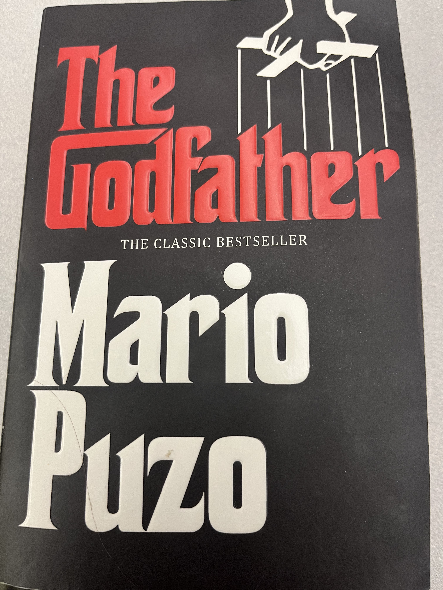

Top 3 Favorite Books
- The Godfather by Mario Puzo
- - The Godfather may be the greatest book I have ever read. It is beautiful, gruesome, violent, but also a story of family and how family is always one thing you have and can't run away from. Family will always be there for better or for worse. This book had me on the edge of my seat the entire time I was reading. There were characters I loved and hated. I also have a soft spot for the American Mafia/Gangsters whether it's New York, Chicago, etc. 
- 1984 by George Orwell
- - 1984 is a dystopian novel that remains eerily relevant today. Orwell's depiction of a totalitarian regime is chilling and thought-provoking. We read this book in senior year of high school (actually it was the book we were reading for class when the pandemic started) and I was fully expecting to hate it the entire time. However, I could not have been more wrong. It is a book that has violence, tense situations, and it follows the story of a very mediocre man who thinks he can defeat Big Brother with his girlfriend. I have read it multiple times and enjoy it more each time.
- The Great Gatsby by F. Scott Fitzgerald
- - The Great Gatsby is a timeless classic that explores themes of love, wealth, and the American Dream. Fitzgerald's prose is elegant and evocative and does not shy away from sensitive topics like domestic violence, murder, drunk driving, and above all, adultry. There are many metaphors all over the book, and it is a book that I have read multiple times. Also, with the setting being in the Roaring 20's, I have a soft spot for any media that focuses on that era.